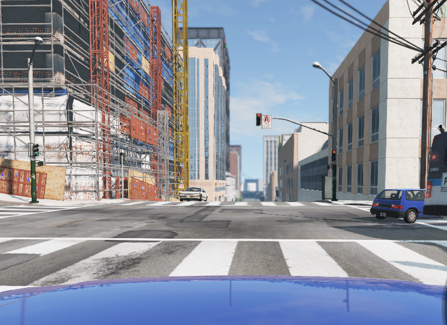

Predicting unseen danger in road circumstance
1. Why should car predict unseen danger in road scene?
There are many unpredictable events that can happen on the road. The
ultimate goal of autonomous vehicles is to detect and predict signals
that even drivers cannot see on the road and warn about them. While
developing the longitudinal control of autonomous vehicles, particularly
the AEB system, I felt that the simplest form of danger detection
(emergency stop when an obstacle overlaps my path) is not safe enough.
Small parts that have fallen off due to vehicle accidents can cause
large secondary accidents. However, it is impossible to introduce all
possible dangerous situations that can occur in vehicles on a
case-by-case basis. This is because accidents are unpredictable.
Therefore, the vehicle should be able to predict even the unseen data as
potential risks, and I aimed to solve this problem with a deep learning
model trained on accident scenario videos.
2. CarCrash dataset and BeamNG
I needed to collect accident situation data, and after some
investigation, I found the
CarCrash Dataset,
which I decided to use to train my model initially. However, the problem
was that the dataset had only about 1500 five-second accident videos,
which was not enough data, and since it was a real accident video
dataset, there was a possibility that each video contained incorrect
information due to noise differences, and most of the accident videos
were very similar. To solve this problem, my supervisor suggested using
BeamNG for collecting accident video.

3. Fusion of ViViT and DANN
To choose a model that could efficiently learn from a small dataset, I
decided to use the
ViViT (video vision
transformer) model, which is known to perform well on video
classification tasks with regularization techniques.
Furthermore, to reduce the gap between the training and testing datasets
due to the differences in background, blurriness, and light reflection,
I decided to incorporate domain adaptation using the
DANN (Domain Adversarial
Neural Network) model proposed by Yaroslav Ganin et.al.
I devised a design to apply DANN by attaching a domain classifier and
gradient reversal layer to the ViViT model. The goal was to accurately
classify accident and non-accident situations using a small amount of
video data, with a large gap between the training and test data due to
factors such as differences in backgrounds, blur levels, and light
reflections.